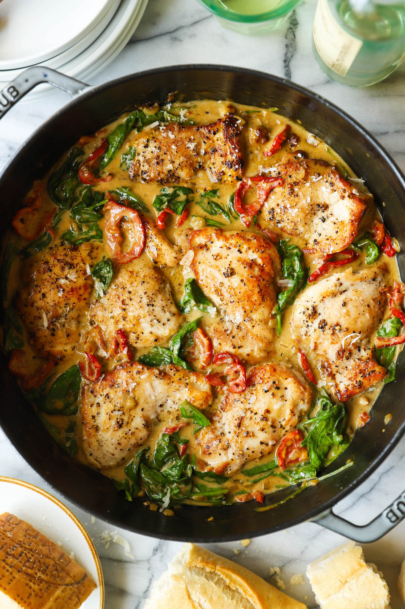

Chicken cutlet with tomatoe sauce

Description
Though a chicken cutlet may be a chicken breast cut in half, this recipe shows how to make chicken cutlets with double the deliciousness.
A jar of sun-dried tomatoes does double duty for this healthy dinner idea.
The flavorful oil they're packed in is used to sauté the chicken, and the tomatoes go into the cream sauce.
Ingredients
- 1 pound chicken cutlets
- ¼ teaspoon salt, divided
- ¼ teaspoon ground pepper, divided
- ½ cup slivered oil-packed sun-dried tomatoes, plus 1 tablespoon oil from the jar
- ½ cup finely chopped shallots
- ½ cup dry white wine
- ½ cup heavy cream
- 2 tablespoons chopped fresh parsley
Steps
- Sprinkle chicken with 1/8 teaspoon each salt and pepper. Heat sun-dried tomato oil in a large skillet over medium heat. Add the chicken and cook, turning once, until browned and an instant-read thermometer inserted into the thickest part registers 165°F, about 6 minutes total. Transfer to a plate.
- Add sun-dried tomatoes and shallots to the pan. Cook, stirring, for 1 minute. Increase heat to high and add wine. Cook, scraping up any browned bits, until the liquid has mostly evaporated, about 2 minutes. Reduce heat to medium and stir in cream, any accumulated juices from the chicken and the remaining 1/8 teaspoon each salt and pepper; simmer for 2 minutes. Return the chicken to the pan and turn to coat with the sauce. Serve the chicken topped with the sauce and parsley.